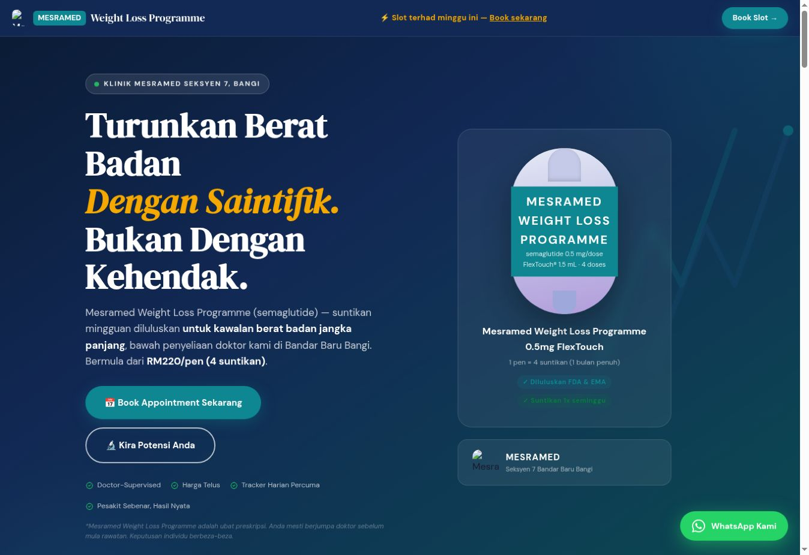

Cerita tentang bisnes
Kongsi servis, sasaran pelanggan, bahan yang ada dan gaya yang disukai.
Biar anda nampak arahnya dahulu. Kami mulakan dengan konsep website, kemudian bincang skop dan harga yang sesuai.
Sebuah projek sebenar untuk dinilai sendiri.
Landing page untuk program Klinik MesraMed. Penerangan servis, pilihan pakej dan aliran pertanyaan disusun dalam satu halaman.
Lawati website MesraMed
Penerangan program, pilihan pakej dan maklumat lokasi.
Contoh soal selidik berperingkat dan paparan kalkulator.
Pautan WhatsApp dan borang untuk langkah seterusnya.
Portfolio menunjukkan hasil pembangunan, bukan jaminan jualan. Fungsi projek ini dinilai berasingan mengikut keperluan website anda.
Lebih mudah berbincang apabila ada arah visual untuk dilihat.
Kongsi servis, sasaran pelanggan, bahan yang ada dan gaya yang disukai.
Selepas brief disemak, kita setuju bentuk konsep awal: susunan halaman, arah visual atau preview terpilih.
Semak halaman, fungsi, kandungan, pindaan dan kos berulang. Kemudian terima quotation untuk projek tersebut.
Pembangunan penuh bermula selepas quotation, terma dan bayaran permulaan dipersetujui.
Konsep awal membantu memilih arah. Bentuk, had pindaan, jadual dan sebarang caj konsep dijelaskan sebelum kerja konsep bermula. Ia bukan janji website lengkap percuma atau pindaan tanpa had.
Kita pilih bentuk yang sesuai selepas faham apa yang bisnes anda perlukan.
Untuk memperkenalkan servis, produk atau kempen dalam satu halaman yang tersusun.
Contoh kandungan / fungsiPengenalan · Kelebihan · Pakej · FAQ · Pertanyaan
Bincang konsep iniUntuk syarikat dan profesional yang memerlukan halaman berasingan bagi profil, servis dan portfolio.
Contoh kandungan / fungsiUtama · Tentang · Servis · Portfolio · Hubungan
Bincang konsep iniUntuk struktur atau interaksi tambahan. Kami semak kebolehlaksanaan sebelum mengesahkan skop.
Contoh kandungan / fungsiBorang · Kalkulator · Integrasi, tertakluk penilaian
Bincang konsep iniContoh di atas bukan senarai fungsi yang termasuk secara automatik. Jumlah halaman, kandungan dan fungsi disahkan dalam quotation.
Warna dan personaliti menarik perhatian. Kandungan dan susunan yang baik membantu pelanggan memahami tawaran anda.
Logo, warna dan gaya visual disesuaikan dengan karakter bisnes.
Servis, hasil kerja, soalan lazim dan hubungan mudah dirujuk melalui satu link.
Susun atur disesuaikan supaya kandungan dan tindakan penting mudah dicapai.
Pengunjung tahu cara membuat pertanyaan atau meminta quotation.
Selepas arah konsep jelas, kita perincikan kerja yang diperlukan.
Jumlah halaman, panjang kandungan, bahasa dan bahan yang perlu disediakan.
Tahap penyesuaian, interaksi, borang dan integrasi yang dipersetujui.
Domain, hosting, langganan platform dan sokongan selepas serahan.
Skop pembangunan, kos pihak ketiga, had pindaan, jadual, bayaran dan serahan dinyatakan sebelum projek penuh bermula. Tiada angka “bermula dari” yang perlu diteka skopnya.
Masih belum pasti? Mulakan dengan brief ringkas di bawah.
Tak mengapa. Kongsi apa yang bisnes tawarkan dan apa yang pelanggan perlu lakukan. Kita bincang sama ada landing page atau website beberapa halaman lebih sesuai.
Tidak semestinya. Bentuk konsep, had kerja dan sebarang caj dijelaskan sebelum kerja konsep bermula. Pembangunan website penuh hanya diteruskan selepas harga dan terma dipersetujui.
Kongsi maklum balas berdasarkan brief asal. Bilangan pindaan dan perubahan arah yang termasuk dipersetujui sebelum kerja; perubahan skop mungkin memerlukan quotation baharu.
Pendekatan visual dan susunan kandungan boleh dibincangkan. Jumlah seksyen, kalkulator, borang dan integrasi perlu dinilai untuk projek anda.
Boleh dibincangkan dalam skop. Bilangan halaman, kandungan terjemahan dan semakan bahasa mempengaruhi kerja serta harga. Laman ini sendiri boleh ditukar antara BM dan EN.
Beritahu bahan yang sudah ada. Pelanggan perlu mengesahkan ketepatan kandungan dan izin penggunaan aset. Bantuan penulisan atau penyediaan bahan dinilai berasingan jika diperlukan.
Domain, hosting dan platform mungkin memerlukan pembaharuan. Pemilikan domain, akses yang diserahkan, lesen dan kos berulang dinyatakan dalam quotation.
Jadual bergantung pada skop serta kelengkapan bahan. Tempoh pembetulan ralat, maintenance, pindaan dan caj tambahan dipersetujui sebelum pembangunan penuh bermula.
Tidak. Website membantu memperkenalkan tawaran dan memudahkan pertanyaan. Hasil turut bergantung pada trafik, permintaan, harga dan cara pelanggan diurus.
Tak perlu tahu semua jawapan lagi. Ceritakan apa yang ada dalam fikiran—itu sudah cukup untuk memulakan perbincangan.
Semakan keperluan → persetujuan konsep awal → preview → quotation projek.